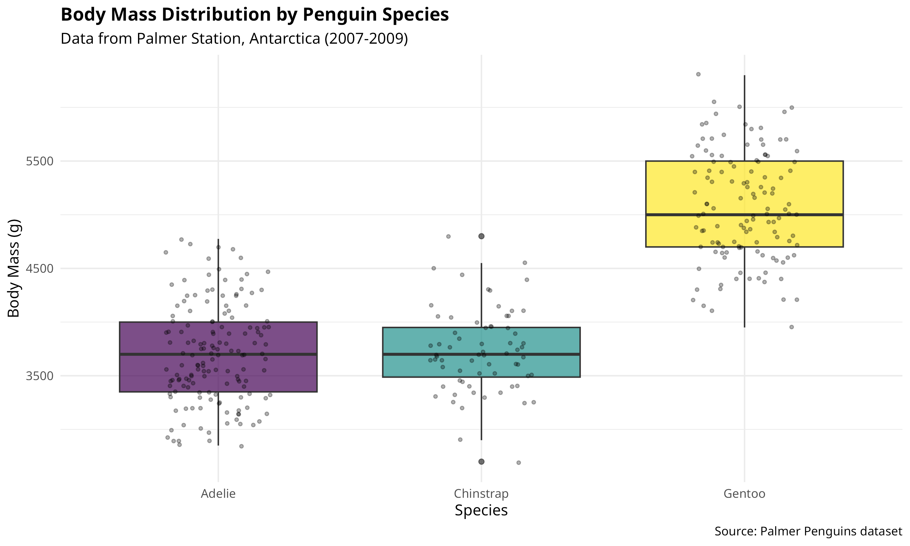

2 Introduction to Data Analysis
2.1 Overview
Data analysis is a critical skill in modern natural sciences research. This chapter introduces the fundamental concepts, tools, and approaches that form the foundation of effective data analysis across various scientific disciplines. By the end of this chapter, you will understand:
- Why data analysis matters in natural sciences
- How to set up R and RStudio
- The tidyverse philosophy and its advantages
- Basic R programming concepts
- How to work with data using modern R practices
2.2 Why Data Analysis Matters in Natural Sciences
Data analysis plays a pivotal role in natural sciences research for several important reasons:
2.2.1 Evidence-Based Decision Making
Data analysis transforms raw observations into actionable insights, enabling researchers and practitioners to make informed decisions about:
- Conservation strategies: Identifying priority areas and species for protection
- Resource management: Optimizing sustainable use of natural resources
- Agricultural planning: Improving crop yields and farming practices
- Environmental interventions: Designing effective pollution control measures
- Climate adaptation: Planning for changing environmental conditions
2.2.2 Pattern Recognition
Through statistical analysis, researchers can identify patterns, trends, and relationships within natural systems that might not be apparent from casual observation alone. This applies to diverse fields including:
- Ecology and population dynamics
- Geology and earth processes
- Marine biology and oceanography
- Atmospheric science and climatology
- Agriculture and food systems
2.2.3 Hypothesis Testing
Data analysis provides rigorous methods to test hypotheses about natural phenomena, allowing researchers to build and refine scientific theories about how natural systems function. This is fundamental across all scientific disciplines.
2.2.4 Prediction and Modeling
Advanced analytical techniques enable the development of predictive models that can forecast changes in natural systems, such as:
- Species distribution shifts under climate change
- Crop yield predictions based on weather patterns
- Disease outbreak forecasting
- Resource depletion projections
- Ecosystem responses to disturbance
Before diving into data analysis, ensure your experimental design follows these key principles:
- Formulate clear hypotheses: Define specific, testable hypotheses before collecting data
- Control for confounding variables: Identify and account for factors that might influence your results
- Randomize appropriately: Randomly assign treatments to experimental units to reduce bias
- Include adequate replication: Ensure sufficient sample sizes for statistical power
- Consider spatial and temporal scales: Match your sampling design to the processes being studied
- Plan for appropriate controls: Include positive, negative, and procedural controls as needed
- Pre-register your study: Document your hypotheses and analysis plan before collecting data
- Plan for data analysis: Select statistical methods based on your design, not just your results
2.3 Introduction to R and RStudio
2.3.1 Why R?
R is a powerful programming language and environment specifically designed for statistical computing and graphics. It has become the standard tool for data analysis in many scientific disciplines.
Key advantages of R include:
| Advantage | Description |
|---|---|
| Open-source and free | Available to anyone without cost |
| Extensive package ecosystem | Over 20,000 packages for specialized analyses |
| Reproducibility | Code-based approach ensures analyses can be repeated |
| Flexibility | Adaptable to virtually any analytical need |
| Active community | Large user base provides support and development |
| Publication-quality graphics | Create professional visualizations |
| Cross-platform | Works on Windows, macOS, and Linux |
2.3.2 Installing R and RStudio
To get started with R, you need to install two pieces of software:
- R - The programming language itself
- RStudio - An integrated development environment (IDE) that makes working with R easier
Installation Steps:
- Download and install R from CRAN
- Choose your operating system (Windows, macOS, or Linux)
- Follow the installation instructions
- Download and install RStudio from Posit
- Choose the free Desktop version
- Follow the installation instructions
You must install R before installing RStudio. RStudio is just an interface to R—it won’t work without R installed on your computer.
2.3.3 The RStudio Interface
When you open RStudio, you’ll see four main panels:
- Source Editor (top-left): Where you write and edit R scripts
- Console (bottom-left): Where R commands are executed
- Environment/History (top-right): Shows your data objects and command history
- Files/Plots/Packages/Help (bottom-right): File browser, plot viewer, package manager, and help documentation
2.4 The Tidyverse: A Modern Approach to Data Science
2.4.1 What is the Tidyverse?
The tidyverse is a collection of R packages designed for data science that share a common philosophy, grammar, and data structures. It represents a modern, coherent approach to data analysis that emphasizes:
- Readability: Code that is easy to read and understand
- Consistency: Functions that work in predictable ways
- Composability: Tools that work well together
- Human-centered design: Focused on the analyst’s workflow
2.4.2 Core Tidyverse Packages
The tidyverse includes these core packages:
| Package | Purpose |
|---|---|
| ggplot2 | Data visualization |
| dplyr | Data manipulation |
| tidyr | Data tidying |
| readr | Data import |
| purrr | Functional programming |
| tibble | Modern data frames |
| stringr | String manipulation |
| forcats | Factor handling |
2.4.3 The Pipe Operator
One of the most powerful features of the tidyverse is the pipe operator %>% (or the native R pipe |>). The pipe allows you to chain operations together in a readable, left-to-right flow:
-
Keyboard shortcut: Use
Ctrl+Shift+M(Windows/Linux) orCmd+Shift+M(macOS) to insert%>% -
Native pipe: In R 4.1+, you can use the native pipe
|>instead of%>% - Best practice: Put each function on its own line for readability
2.4.4 Tidy Data Principles
The tidyverse is built around the concept of tidy data:
- Each variable forms a column
- Each observation forms a row
- Each type of observational unit forms a table
Tidy data makes analysis easier because it provides a consistent structure that all tidyverse tools expect.
2.5 Installing Required Packages
For the analyses in this book, you’ll need several R packages. Install them with the following code:
Code
# Core tidyverse packages
install.packages("tidyverse")
# Statistical analysis
install.packages(c("rstatix", "car", "performance"))
# Visualization enhancements
install.packages(c("viridis", "patchwork", "scales"))
# Table formatting
install.packages(c("knitr", "kableExtra", "gt"))
# For this book's datasets
install.packages("readr")You only need to install packages once on your computer. After installation, you just need to load them with library() at the start of each R session.
2.6 Your First R Analysis
Let’s walk through a complete analysis using real data to see R and the tidyverse in action.
2.6.1 Loading Data
We’ll use the Palmer Penguins dataset, which contains measurements of penguins from Antarctica:
Code
# Load the tidyverse
library(tidyverse)
# Load the penguin dataset
penguins <- read_csv("../data/environmental/climate_data.csv")
# View the first few rows
head(penguins)
#> # A tibble: 6 × 8
#> species island bill_length_mm bill_depth_mm flipper_length_mm body_mass_g
#> <chr> <chr> <dbl> <dbl> <dbl> <dbl>
#> 1 Adelie Torgersen 39.1 18.7 181 3750
#> 2 Adelie Torgersen 39.5 17.4 186 3800
#> 3 Adelie Torgersen 40.3 18 195 3250
#> 4 Adelie Torgersen NA NA NA NA
#> 5 Adelie Torgersen 36.7 19.3 193 3450
#> 6 Adelie Torgersen 39.3 20.6 190 3650
#> # ℹ 2 more variables: sex <chr>, year <dbl>-
library(tidyverse): Loads all core tidyverse packages -
read_csv(): A tidyverse function for reading CSV files (faster and smarter than base R’sread.csv()) -
head(): Shows the first 6 rows of the dataset
2.6.2 Exploring the Data Structure
Code
# Get an overview of the data structure
glimpse(penguins)
#> Rows: 344
#> Columns: 8
#> $ species <chr> "Adelie", "Adelie", "Adelie", "Adelie", "Adelie", "A…
#> $ island <chr> "Torgersen", "Torgersen", "Torgersen", "Torgersen", …
#> $ bill_length_mm <dbl> 39.1, 39.5, 40.3, NA, 36.7, 39.3, 38.9, 39.2, 34.1, …
#> $ bill_depth_mm <dbl> 18.7, 17.4, 18.0, NA, 19.3, 20.6, 17.8, 19.6, 18.1, …
#> $ flipper_length_mm <dbl> 181, 186, 195, NA, 193, 190, 181, 195, 193, 190, 186…
#> $ body_mass_g <dbl> 3750, 3800, 3250, NA, 3450, 3650, 3625, 4675, 3475, …
#> $ sex <chr> "male", "female", "female", NA, "female", "male", "f…
#> $ year <dbl> 2007, 2007, 2007, 2007, 2007, 2007, 2007, 2007, 2007…
# Summary statistics
summary(penguins)
#> species island bill_length_mm bill_depth_mm
#> Length:344 Length:344 Min. :32.10 Min. :13.10
#> Class :character Class :character 1st Qu.:39.23 1st Qu.:15.60
#> Mode :character Mode :character Median :44.45 Median :17.30
#> Mean :43.92 Mean :17.15
#> 3rd Qu.:48.50 3rd Qu.:18.70
#> Max. :59.60 Max. :21.50
#> NA's :2 NA's :2
#> flipper_length_mm body_mass_g sex year
#> Min. :172.0 Min. :2700 Length:344 Min. :2007
#> 1st Qu.:190.0 1st Qu.:3550 Class :character 1st Qu.:2007
#> Median :197.0 Median :4050 Mode :character Median :2008
#> Mean :200.9 Mean :4202 Mean :2008
#> 3rd Qu.:213.0 3rd Qu.:4750 3rd Qu.:2009
#> Max. :231.0 Max. :6300 Max. :2009
#> NA's :2 NA's :22.6.3 Data Manipulation with dplyr
The dplyr package provides intuitive verbs for data manipulation:
Code
# Filter: Keep rows that match a condition
adelie_penguins <- penguins %>%
filter(species == "Adelie")
# Select: Keep only certain columns
measurements <- penguins %>%
select(species, bill_length_mm, bill_depth_mm, body_mass_g)
# Mutate: Create new columns
penguins_with_ratio <- penguins %>%
mutate(bill_ratio = bill_length_mm / bill_depth_mm)
# Arrange: Sort rows
sorted_penguins <- penguins %>%
arrange(desc(body_mass_g))
# Summarize: Calculate summary statistics
species_summary <- penguins %>%
filter(!is.na(body_mass_g)) %>%
group_by(species) %>%
summarize(
n = n(),
mean_mass = mean(body_mass_g),
sd_mass = sd(body_mass_g),
min_mass = min(body_mass_g),
max_mass = max(body_mass_g)
)
# Display the summary
species_summary
#> # A tibble: 3 × 6
#> species n mean_mass sd_mass min_mass max_mass
#> <chr> <int> <dbl> <dbl> <dbl> <dbl>
#> 1 Adelie 151 3701. 459. 2850 4775
#> 2 Chinstrap 68 3733. 384. 2700 4800
#> 3 Gentoo 123 5076. 504. 3950 6300The summary table shows key statistics for each penguin species:
- n: Sample size (number of observations)
- mean_mass: Average body mass in grams
- sd_mass: Standard deviation, measuring variability
- min_mass/max_mass: Range of body masses
This summary reveals that Gentoo penguins are the largest on average, while Chinstrap and Adelie penguins are more similar in size.
2.6.4 Visualization with ggplot2
The ggplot2 package creates beautiful, publication-quality graphics:
Code
# Create a boxplot of body mass by species
ggplot(penguins, aes(x = species, y = body_mass_g, fill = species)) +
geom_boxplot(alpha = 0.7) +
geom_jitter(width = 0.2, alpha = 0.3, size = 1) +
scale_fill_viridis_d() +
labs(
title = "Body Mass Distribution by Penguin Species",
subtitle = "Data from Palmer Station, Antarctica (2007-2009)",
x = "Species",
y = "Body Mass (g)",
fill = "Species",
caption = "Source: Palmer Penguins dataset"
) +
theme_minimal(base_size = 12) +
theme(
plot.title = element_text(face = "bold"),
legend.position = "none"
)
The ggplot2 syntax follows a layered grammar of graphics:
-
ggplot(): Initialize the plot with data and aesthetic mappings -
aes(): Define how variables map to visual properties -
geom_boxplot(): Add a boxplot layer -
geom_jitter(): Add individual points with slight horizontal spread -
scale_fill_viridis_d(): Apply a colorblind-friendly color palette -
labs(): Add labels and titles -
theme_minimal(): Apply a clean, minimal theme -
theme(): Further customize appearance
2.6.5 A Scatter Plot with Regression
Code
# Create a scatter plot with regression lines
ggplot(penguins, aes(x = bill_length_mm, y = body_mass_g, color = species)) +
geom_point(alpha = 0.7, size = 2) +
geom_smooth(method = "lm", se = TRUE, alpha = 0.2) +
scale_color_viridis_d() +
labs(
title = "Relationship Between Bill Length and Body Mass",
subtitle = "Linear relationships shown for each species",
x = "Bill Length (mm)",
y = "Body Mass (g)",
color = "Species",
caption = "Source: Palmer Penguins dataset"
) +
theme_minimal(base_size = 12) +
theme(
plot.title = element_text(face = "bold"),
legend.position = "bottom"
)
2.7 The Data Analysis Workflow
Effective data analysis typically follows a structured workflow:
2.7.1 1. Import
Bring your data into R from files, databases, or APIs:
Code
# CSV files
data <- read_csv("path/to/file.csv")
# Excel files (requires readxl package)
data <- readxl::read_excel("path/to/file.xlsx")
# From URLs
data <- read_csv("https://example.com/data.csv")2.7.2 2. Tidy
Restructure data into a consistent format:
- Each variable in its own column
- Each observation in its own row
- Each value in its own cell
2.7.3 3. Transform
Manipulate data to create the variables you need:
- Filter observations
- Create new variables
- Calculate summaries
- Join multiple datasets
2.7.4 4. Visualize
Create graphics to understand patterns:
- Explore distributions
- Identify relationships
- Detect outliers
- Generate hypotheses
2.7.5 5. Model
Apply statistical methods to test hypotheses:
- Fit regression models
- Perform hypothesis tests
- Estimate parameters
- Make predictions
2.7.6 6. Communicate
Share your findings effectively:
- Create reports with R Markdown or Quarto
- Build interactive dashboards
- Write scientific papers
- Present to stakeholders
2.8 Types of Data in Natural Sciences
Understanding your data type is crucial for choosing appropriate analytical methods:
2.8.1 Categorical Data
Categorical data represent qualitative characteristics:
- Nominal: Categories with no inherent order (species names, habitat types)
- Ordinal: Categories with a meaningful order (pollution levels: low, medium, high)
2.8.2 Numerical Data
Numerical data involve measurements or counts:
- Continuous: Can take any value within a range (temperature, pH, biomass)
- Discrete: Can only take specific values, usually counts (number of individuals)
2.8.3 Spatial Data
Spatial data describe geographical distributions:
- Coordinates (latitude/longitude)
- Elevation or depth
- Land cover maps
- Remote sensing data
2.8.4 Temporal Data
Temporal data track changes over time:
- Time series measurements
- Seasonal patterns
- Long-term monitoring data
- Growth curves
2.9 Best Practices for Reproducible Research
Adopt these practices from the start of your research career:
- Use R projects: Organize your work in self-contained RStudio projects
-
Use relative paths: Never use absolute file paths like
C:/Users/Name/... - Document your code: Add comments explaining why, not just what
- Version control: Use Git to track changes to your scripts
-
Save your environment: Record package versions with
sessionInfo() - Write functions: Avoid copying and pasting code; write reusable functions
- Use R Markdown/Quarto: Combine code, results, and narrative in one document
-
Set seeds for reproducibility: Use
set.seed()before any random operations
2.9.1 Session Information
Always record your R environment for reproducibility:
Code
# Display session information
sessionInfo()
#> R version 4.4.3 (2025-02-28)
#> Platform: x86_64-redhat-linux-gnu
#> Running under: Fedora Linux 40 (Workstation Edition)
#>
#> Matrix products: default
#> BLAS/LAPACK: FlexiBLAS OPENBLAS-OPENMP; LAPACK version 3.12.0
#>
#> locale:
#> [1] LC_CTYPE=en_AU.UTF-8 LC_NUMERIC=C
#> [3] LC_TIME=en_AU.UTF-8 LC_COLLATE=en_AU.UTF-8
#> [5] LC_MONETARY=en_AU.UTF-8 LC_MESSAGES=en_AU.UTF-8
#> [7] LC_PAPER=en_AU.UTF-8 LC_NAME=C
#> [9] LC_ADDRESS=C LC_TELEPHONE=C
#> [11] LC_MEASUREMENT=en_AU.UTF-8 LC_IDENTIFICATION=C
#>
#> time zone: Australia/Brisbane
#> tzcode source: system (glibc)
#>
#> attached base packages:
#> [1] stats graphics grDevices datasets utils methods base
#>
#> other attached packages:
#> [1] lubridate_1.9.4 forcats_1.0.0 stringr_1.5.1 dplyr_1.1.4
#> [5] purrr_1.0.4 readr_2.1.5 tidyr_1.3.1 tibble_3.2.1
#> [9] ggplot2_4.0.0 tidyverse_2.0.0
#>
#> loaded via a namespace (and not attached):
#> [1] utf8_1.2.5 generics_0.1.4 lattice_0.22-7 stringi_1.8.7
#> [5] hms_1.1.3 digest_0.6.37 magrittr_2.0.3 evaluate_1.0.3
#> [9] grid_4.4.3 timechange_0.3.0 RColorBrewer_1.1-3 fastmap_1.2.0
#> [13] Matrix_1.7-3 jsonlite_2.0.0 mgcv_1.9-3 viridisLite_0.4.2
#> [17] scales_1.4.0 CoprManager_0.5.7 codetools_0.2-20 cli_3.6.5
#> [21] rlang_1.1.6 crayon_1.5.3 splines_4.4.3 bit64_4.6.0-1
#> [25] withr_3.0.2 yaml_2.3.10 tools_4.4.3 parallel_4.4.3
#> [29] tzdb_0.5.0 vctrs_0.6.5 R6_2.6.1 lifecycle_1.0.4
#> [33] htmlwidgets_1.6.4 bit_4.6.0 vroom_1.6.5 pkgconfig_2.0.3
#> [37] pillar_1.10.2 gtable_0.3.6 glue_1.8.0 xfun_0.52
#> [41] tidyselect_1.2.1 knitr_1.50 dichromat_2.0-0.1 farver_2.1.2
#> [45] nlme_3.1-168 htmltools_0.5.8.1 rmarkdown_2.29 labeling_0.4.3
#> [49] compiler_4.4.3 S7_0.2.02.10 Summary
In this chapter, we introduced:
- The importance of data analysis in natural sciences research
- R and RStudio as powerful tools for data analysis
- The tidyverse philosophy and its core packages
- Basic data manipulation with
dplyr - Data visualization with
ggplot2 - The data analysis workflow
- Types of data in natural sciences
- Best practices for reproducible research
In the next chapter, we’ll dive deeper into data basics, learning more about data structures, importing various file formats, and preparing data for analysis.
2.11 Exercises
Install and explore: Install R and RStudio on your computer. Open RStudio and explore the interface.
Load the tidyverse: Run
library(tidyverse)and note which packages are loaded.Explore built-in data: Use
head(),glimpse(), andsummary()on R’s built-inirisdataset.-
Practice pipes: Rewrite this nested code using pipes:
Create a summary: Using the penguins data (or
iris), calculate the mean and standard deviation of a numerical variable for each group of a categorical variable.Make a plot: Create a scatter plot of two numerical variables from the
irisdataset, colored by species.Research question: Think about a research question in your field. What type of data would you need? What visualizations might help you explore the data?